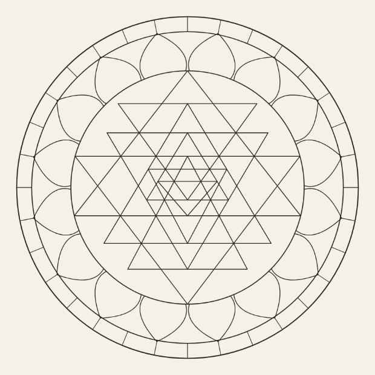
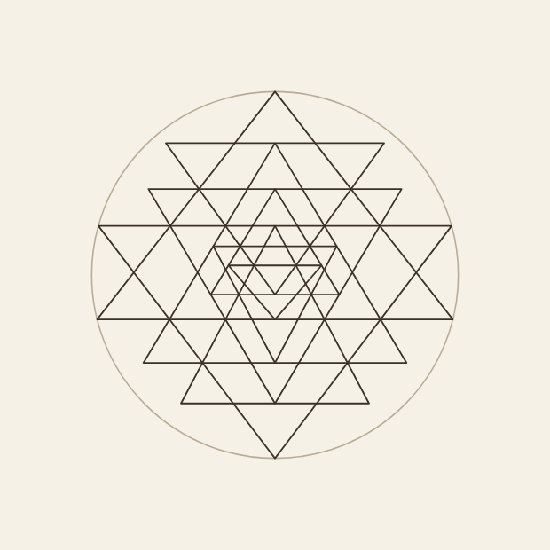
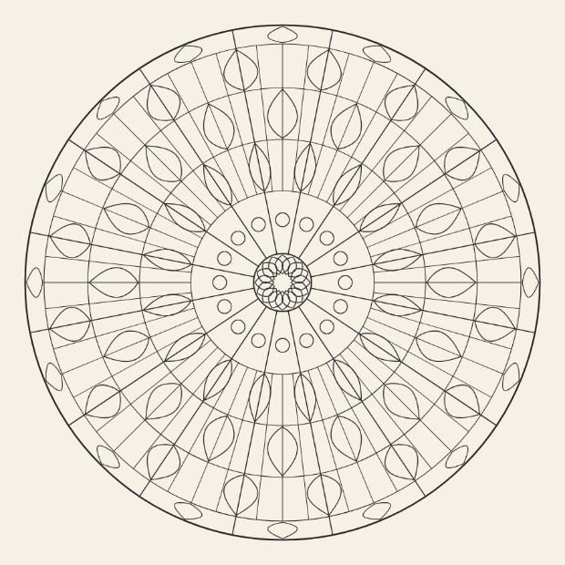

Neun Dreiecke
Das erste Motiv einer neuen Welt — und das erste, das nicht ich entworfen habe, sondern eine Überlieferung.

„Neun Dreiecke“, gezeichnet von der App selbst. 144 Felder, jedes einzelne ausmalbar.
Die Figur, und warum sie schwer ist
Vier Dreiecke weisen nach oben, fünf nach unten. Sie durchdringen einander — so weit ist das leicht. Die Bedingung, die diese Figur zu einem der berühmteren Konstruktionsprobleme macht, ist eine andere: Es müssen sich jeweils drei Linien in einem Punkt treffen, nicht zwei und eine knapp daneben. Mit Zirkel und Lineal ist das nicht lösbar; die Bedingungen bilden ein Gleichungssystem.
Genau daran ist auch zu erkennen, ob eine Zeichnung stimmt oder nur so aussieht. In den meisten frei nachgezeichneten Fassungen tut sie es nicht. Deshalb ist die Tafel im Kopf des Blocks eine gelöste Fassung, und deshalb steht hier eine Messung statt einer Behauptung:

Der nackte Kern
27 Dreiertreffpunkte · größte Streuung 0,13 von 100 · auf diesem Blatt ein halber Bildpunkt
Die Ecken der beiden größten Dreiecke liegen auf dem Kreis — das ist Bolton und Macleods zweite Bedingung, und sie stimmt auf drei Nachkommastellen. Die Spitzen der übrigen Dreiecke liegen auf den Grundlinien anderer; auch das ist keine Näherung, sondern exakt.

Zum Vergleich: Spitzenrad
679 Felder · 449 ausmalbar · Median 267 · größtes Feld 0,6 %
Das dichteste der elf Feinwerk-Motive. Es hat dreimal so viele Felder — und jede seiner Linien war eine Entscheidung von mir. Genau das ist der Unterschied, um den es geht.
Was gemessen ist
| Motiv | Felder | ausmalbar | Median | größtes Feld |
|---|---|---|---|---|
| Neun Dreiecke | 144 | 144 | 2485 | 3,63 % |
| Spitzenrad (Feinwerk) | 679 | 449 | 267 | 0,6 % |
| Kettenglied (Feinwerk) | 396 | 251 | 156 | 2,4 % |
Die Zeile, auf die es ankommt, ist die dritte: 144 Felder, 144 ausmalbar. Nicht ein einziger Splitter. Zum Vergleich lagen die Mediane der elf Feinwerk-Motive zwischen 72 und 523 Bildpunkten — hier sind es 2485, das Feld ist im Schnitt also fünf- bis dreißigmal so groß. Weniger Felder, aber jedes eines, in das ein Stift passt.
Das größte Feld nimmt 3,63 % der Scheibe ein; erlaubt sind 4 %. Es sind die vier Zwickel zwischen der Dreiecksfigur und ihrem Kreis. Sie liegen innerhalb der Grenze, aber knapp — das ist die Stelle, an der ich nachbessern würde, wenn diese Welt weitergeht.
Was übernommen ist und was nicht
Die Vorlage ist das Sri Yantra, im tantrischen Hinduismus ein Andachtsdiagramm, kein freies Ornament. Übernommen ist die Ordnung: neun verschränkte Dreiecke, ein Lotoskranz, die Bewegung von außen nach innen. Nicht übernommen sind der Name im Motivnamen, die Zuordnung zu einer Gottheit und die Deutung des Mittelpunkts. Das ist dieselbe Regel wie bei den Anlagen, nachzulesen in architektur.md §5.
Zwei Bausteine der Vorlage fehlen, und zwar mit Grund:
- Der achtblättrige Lotoskranz. Er passt in den Ring zwischen Kern und äußerem Kranz nur als gedrungene Form — die Blätter würden breiter als hoch. Ein Ring statt zwei, dafür ein Kern, der zwei Drittel des Radius einnimmt.
- Der Torring mit den vier Toren. Den gibt es in dieser App schon: Er ist die Grundlage der acht Anlagen. Ein zweites Mal wäre eine Dopplung, und Dopplungen waren ausdrücklich nicht erwünscht.
Woher die Zahlen stammen
- Bolton & Macleod, „The Geometry of the Śrī-Yantra“, Religion 7 (1977) — die Arbeit, die zeigt, dass die Berührungsbedingungen die Figur bis auf wenige freie Größen festlegen, und dass die Ecken der größten Dreiecke auf dem Kreis liegen müssen.
- A. V. Kulaichev hat die Beziehungen ausgerechnet und gezeigt, dass keine Zirkel-und-Lineal-Konstruktion existiert.
- Gérard Huet, „Cartesian Śrī Yantra“, Theoretical Computer Science (2002) — ein ausdrückliches Verfahren; es gibt eine kleine Schar gültiger Figuren, nicht eine einzige.
Was als Nächstes ansteht
Nach der Absprache im Repository dürfen die beiden Apps nicht auseinanderlaufen: Was das Atelier bekommt, bekommt Blatt auch — in Blatts Grammatik übersetzt, nicht kopiert. Das ist der nächste Schritt und ein eigener, denn Blatt würfelt seine Blätter, und eine Figur, die nur in einer einzigen gelösten Fassung existiert, ist das Gegenteil davon. Der Weg dahin führt über Huets Schar: nicht eine Figur, sondern die Familie gültiger Figuren, aus der sich würfeln lässt.
Und dann liegen noch fünf recherchierte Familien da: Mehndi, Chakren, Palast-Mandala, Bauhaus, Origami. Diese hier war die erste.